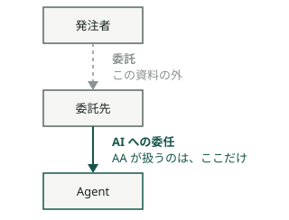
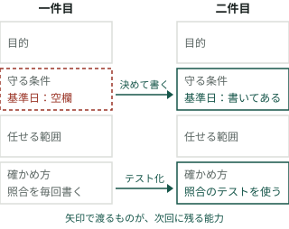

AGENTIC AGILE ／ 紹介 4 ／ 0〜4 の 5 枚組の最後
AI に開発を任せると、レビュー待ちが人間の側に積み上がるか、誰が何を確かめたのか分からない成果が返ってくるか、になりがちです。
分かれ目は、依頼に何を書くかです。渡すのは作業の手順ではなく、仕事が成り立つ条件です。目的、守る条件、任せる範囲（どこまで AI が決めてよく、どこから人間が責任を持つか）、確かめ方。この四つが書かれていれば、AI は計画から検証までを自分で回せます。
この 1 枚は、その四つを一件の例で埋め、最初の一件を選んで渡すところまでを扱います。
以下、任せる相手の AI を Agent と呼びます。計画し、道具を使い、実行結果を確かめて修正する AI です。
この資料の補足 — AA の原則の外
「Agent に渡す」を「ベンダーに渡す」と読み替えることもできますが、AA の原則と導入解説が扱うのは、下の図の後ろの矢印だけです。

— ／ 一文の依頼
例を一つ、最後まで使います。契約と請求を扱う開発で、こう頼まれたとします。
依頼
契約プランを変更したら、
1 時間以内に請求へ反映したい。
Agent は作ります。けれど、この一文には次のことが書かれていません。
同じ現場に長くいる人なら、聞き返すか、慣習で埋めます。Agent は聞き返さずにもっともらしく埋めることがあり、埋め方は毎回同じとは限りません。2 枚目の P1 権威は書かれたものに宿る は、この問題に応えるための原則です。
そこで出力を一つずつ人間が確かめると、1 枚目の崩れ方 A（人間が全部を承認する）に入ります。作業を細かく分けて渡しても、分けた数だけ確認が人間に戻ってきます。
手順を渡すのをやめて、条件を書きます。条件の中であれば、どう分けるか、どの順でやるかは Agent が決められます。
01 ／ 四つの条件
先の依頼を、四つの欄で書き直します。下の小さな字は、自分の案件で埋めるときに使う問いです。
GOAL
目的変更受付から 1 時間以内に、正しい請求予定額を確認できる。
何が成り立てば、利用者にとって嬉しいか。なぜそれが要るのか
CONSTRAINTS
守る条件確定済みの請求は変更しない。日割り計算と日付の基準を明記する。
速くできても、壊してはいけないものは何か
AUTHORITY
任せる範囲隔離した環境で、調査・変更・検証を進めてよい。本番への反映は権限者が判断する。
どこまでなら、戻せるか。何を見てよく、何を外へ出してよいか
ACCEPTANCE EVIDENCE
確かめ方反映時間、期待金額との一致、重複して請求しないことを、あとから確かめ直せる記録で示す。
何が見えたら、終わったと言えるか
目的には、背景も添えます。「なぜ 1 時間なのか」が書いてあれば、Agent は 1 時間に収まらない案を自分で捨てられます。何を決めてよいかは、三つ目の欄「任せる範囲」にだけ書きます。背景は知ってよいことで、知ったことで権限は広がりません。
四つを書こうとして埋まらない欄があれば、それが人間の側でまだ決まっていない判断です。日割りの基準日が誰にも言えないなら、それは Agent に渡す前に決めることの一覧に入ります。
四つが揃うと、その中で次の往復が回ります。
合意した四つの条件の中で
↓
↓
↓
↑ 01 へ戻る
→ 意味が決まっていないこと、範囲の外の判断は、人間へ戻る
月末の金額が合わないとき、実装の誤りなら範囲の中で直せます。業務のルール自体が決まっていないなら、それは人間へ戻り、決まった内容が条件に書き足されてから再開します。
02 ／ 返ってくるもの
作業を渡したときに返ってくるのは、何をやったかの報告です。条件を渡したときに返ってくるのは、何が成り立ったかです。
成り立ったことを示す記録を、ここでは Evidence と呼びます。差分、検証の結果、残っている未解決事項。あとから第三者が見て、同じ判定を確かめ直せるものです。
作業報告
成果と Evidence
右の記録は、四つ目の欄「確かめ方」にそのまま対応しています。確かめ方を先に書いておくと、返ってくるものの形が決まります。人間が見るのは、欄と記録が合っているかどうかです。
判定は、作った者とは別の者が行います。同じ生成元は同じ誤りを共有するので、作った Agent 自身の「確認しました」は Evidence に数えません（2 枚目の D3 生成と判定の分離）。
そして、最後に確かめるのは業務の上での成果です。この例なら、本番に反映したあと、利用者が時間内に正しい請求予定額を見られたか。テストが通った、コードができた、は途中の記録です。
03 ／ 人間側の二つの責務
四つの欄を埋めるとき、人間は二つの違う問いに答えています。
ENABLER
今回、何を成り立たせるか。 顧客の文脈を理解し、目的と確かめ方を具体にする。止まっているものを解き、成果が成り立つまで変化を進める。OPERATOR
その引き受け方を、続けられるか。 任せる範囲、Agent の構成、道具、検証の環境を整え、成果を出し続けられる状態を保つ。二つが分かれて見えるのは、ぶつかる場面です。急ぎの請求変更を求められたとき、対象の契約を絞って先に届けるのか、照合の能力を増やして広い範囲を扱うのか。前者は Enabler が成果の条件を調整する動き、後者は Operator が仕組みの能力を変える動きです。どちらか一方だけで決めると、今回の成果か、次からの引き受け方か、どちらかが削られます。
Enabler の仕事は、成果が成り立つまで続きます。Operator の仕事は、一つずつ承認しなくても進む状態を整えることです。どちらの判断も、条件と仕組みに書き残すほど、次の一件を広く任せられるようになります。
この二つの名前について
Enabler と Operator は、複数の開発主体を扱う EAA（3 枚目）の、規範ではない適用例から借りた、役割配置の参考モデルです。AA の原則には、この役割名は出てきません。二人に固定するものでもなく、兼務もできます。AA が求めているのは、二つの問いを区別して答えることです。
04 ／ 一周して残る二つ
一件が終わると、残るものが二つあります。
今回に残る成果
使える請求機能 契約変更が時間内に反映される機能と、金額・時間・重複防止を確かめた記録。次回に残る能力
同じ問いで止まらない仕組み 月末のルール、照合のテスト、検証用のデータ。次の Agent が同じ確認を繰り返さずに済む条件。右側は、次の一件で四つの欄を書くときに効きます。

定義元の開発モデルは、自分が判断しなくても動く仕組みを作ることも、人間の成果に含めています。
直す対象は、規則のほかにもあります。照合の手間が毎回大きいなら、検証の道具を作る。得意分野が違うなら、Agent の構成を変える。同じ問い合わせが繰り返されるなら、意味や判断の条件を書き足す。
ただし、条件を書き換えるときに一つだけ決まりがあります。Agent は条件の改訂を提起できますが、自分を縛る条件を緩める改訂を、自分で承認することはできません（2 枚目の P3 憲法は改訂される、D8 自己権限の固定）。ここでの憲法は、その層が従うルールを書いた文書のことです。
05 ／ 最初の一件
ここからは原則ではなく、この資料からの提案です。五手で一周します。
四手目で見る「人間に戻ってきた判断」が、二件目で書き足す欄の一覧になります。
06 ／ 一人で始めるとき
一人で始めて構いません。Enabler と Operator を兼ねても、いまどちらの問いに答えているかは区別します。成果の条件を緩めて先に届けるのか、仕組みの能力を足すのか。同じ人が決めるときほど、どちらで決めたかを書き残しておくと、あとで直す場所が分かります。
判定の分離も、一人で保てます。作った Agent とは別の Agent、または別のモデル系列に判定させます。
一つだけ、分けられない場面があります。すでに使っている規範の改訂を、所有者である自分が提起したときです。AA が従う上位の規範は、改訂を提起した者と承認する者を分けることを求めています。自分のほかに承認者を置けない場合の扱いは、その上位の規範でも未決とされています。
一件を渡し、成果と Evidence を受け取るまでは、この未決の問題に触れずに進められます。未決に当たるのは、一周したあとで条件の元になっている規範そのものを書き換えるときです。
人間の判断から、実行条件を作る。
Agent の実行から、次の能力を育てる。
最初にやることは一つです。一件を選び、四つの欄を書いて、渡す。
請求の例と数値は、説明のための仮定です。
これまでの手法は、人に作業を割り当ててきました（0 枚目）。Agent には、書かれたものだけが効きます（2 枚目）。本書は、この二つが実務で重なる「何を渡すか」の場面を扱っています。
四つの条件と、成果と Evidence の扱いは、AA の導入解説「考え方と開発の姿」に拠っています。原則と指針の定義元は Agentic Agile Principles です。本書は解説であり、新たな義務を追加しません。
Enabler と Operator は、EAA の役割モデル（適用例・非規範）から借りた参考モデルです。最初の一件の五手は、この資料の提案です。
原則と指針の番号（P1〜P3、D1〜D8）は、2 枚目と同じく定義元のものです。